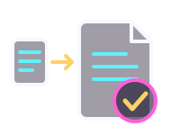
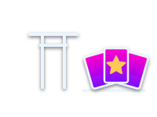
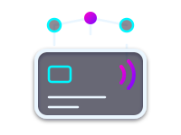
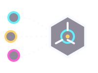
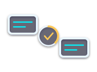
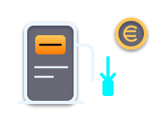

Java
POO, APIs REST

Disponible para prácticas / primer empleo backend
Prácticas en Fundación General ULL · DAM
Backend · Bases de datos · Arquitectura
Estudiante de Desarrollo de Aplicaciones Multiplataforma en Tenerife. Me obsesiona entender cómo funcionan las cosas por dentro y construir soluciones que aporten valor real.
public class Diego {
// Identidad
private String nombre = "Diego Gil";
private String rol = "Backend Developer";
// Stack actual
private String[] stack = {
"Java", "Spring Boot", "PostgreSQL",
"Node.js", "JavaScript", "PHP"
};
// Ahora aprendiendo
private String[] aprendizajeActual = {
"Sistemas distribuidos",
"PL/pgSQL avanzado",
"APIs REST"
};
// Filosofía
public void construir() {
pensar();
programar();
mejorar();
}
}$ whoami
Diego Gil — Backend Developer · estudiante de DAM en Tenerife · prácticas en la Fundación General de la ULL.
$ help
Comandos: help · whoami · stack · proyectos · contacto · clear
POO, APIs REST

JWT, JPA, microservicios

Servicios distribuidos

WordPress y APIs

PL/pgSQL, triggers, ACID
SQL distribuido

Consultas relacionales

Persistencia embebida

Lógica e interactividad

Estructura semántica

Animaciones y responsive

Temas y WooCommerce

Automatización del flujo de gestión de facturas con validaciones en cascada y trazabilidad documento a documento.
Contexto. La gestión de facturas del programa se hacía a mano, con validaciones repetitivas y sin un rastro claro de en qué punto estaba cada documento.
Mi rol. Durante las prácticas en la Fundación General de la ULL desarrollé el flujo de automatización de principio a fin.
Aprendí a modelar un proceso real de negocio y a poner la trazabilidad por delante de añadir funciones.

Torneos y ranking ELO de personajes anime. Backend con autenticación JWT y persistencia en PostgreSQL.
Contexto. Quería comparar personajes de anime con un ranking que fuese justo y se mantuviera entre sesiones.
Mi rol. Backend full-stack: API, autenticación y persistencia.
Aprendí a diseñar una API REST autenticada y a tratar datos de una fuente externa que no controlo.

Sistema de pagos distribuido tolerante a fallos sobre una base de datos SQL global.
Contexto. Procesar pagos sin perder consistencia aunque caiga un nodo o una región entera.
Mi rol. Diseño e implementación del backend distribuido.
CockroachDB mantiene el pago consistente aunque caiga un nodo. Pulsa o enfoca cada bloque para ver su rol.
Aprendí cómo funcionan la tolerancia a fallos y el consenso en bases de datos distribuidas.

SDK de datos de anime para Java: un único cliente unificado sobre AniList, TMDb y Jikan.
Contexto. Cada fuente de datos de anime (AniList, TMDb, Jikan) tiene su propia API, su formato y sus rarezas.
Mi rol. Diseño del SDK y su API pública.
Aprendí a diseñar una librería y a abstraer proveedores detrás de una interfaz estable.

Matcher difuso multi-señal entre AniList y TMDb con algoritmos de similitud propios y scoring explicable.
Contexto. Enlazar un anime de AniList con su entrada en TMDb cuando los títulos no coinciden exactamente (traducciones, romanizaciones, subtítulos).
Mi rol. Diseño del algoritmo de emparejamiento.
Aprendí matching difuso y a diseñar un score que una persona pueda interpretar.

PWA con los precios oficiales del diésel en Tenerife: la gasolinera más barata, también offline.
Contexto. Encontrar rápido la gasolinera de diésel más barata de Tenerife, también sin conexión.
Mi rol. Desarrollo completo de la PWA.
Aprendí a construir una PWA con service workers y a consumir datos abiertos oficiales.
Automatización del flujo de gestión de facturas del proyecto Canarias Convive. Backend con Google Apps Script, frontend con Next.js, validaciones automáticas y trazabilidad.
Aprendizaje en programación orientada a objetos, desarrollo backend, bases de datos y arquitectura de aplicaciones.
Fundamentos de programación en Java, lógica de aplicaciones, estructuras de datos y primeros pasos en backend.
Contacto
Abierto a colaborar en proyectos que busquen evolucionar, optimizar procesos y construir soluciones sólidas a largo plazo.
Estudiante de Desarrollo de Aplicaciones Multiplataforma en Tenerife. Interesado en backend, arquitectura de software y mejora continua de sistemas que aporten valor.